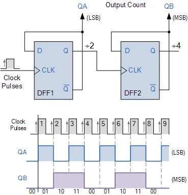

Sequential circuits store and transition between states based on clock signals. Unlike combinational logic, their outputs depend on both current inputs and past history (state).
🔁 Types of Flip-Flops
SR Flip-Flop: Set-Reset based on inputs.
D Flip-Flop: Latches the value of D on clock edge.
JK Flip-Flop: Generalized SR that toggles when both inputs are 1.
T Flip-Flop: Toggles output on clock when T is high.
🧪 SR Flip-Flop Truth Table
S
R
Qn+1
Comment
0
0
Qn
No Change
0
1
0
Reset
1
0
1
Set
1
1
Undefined
Invalid
🎞️ Animation: D Flip-Flop Behavior
This animation shows the value at D being latched to Q on the rising edge of CLK.
🔢 Counter Example (Mod-4)
Using 2 T flip-flops, a Mod-4 counter cycles through: 00 → 01 → 10 → 11 → 00...

🧠 Quiz
Q1: What happens when both S and R are 1 in an SR Flip-Flop?
Answer: Output is undefined — invalid condition.
Q2: What does a D flip-flop do on the rising clock edge?